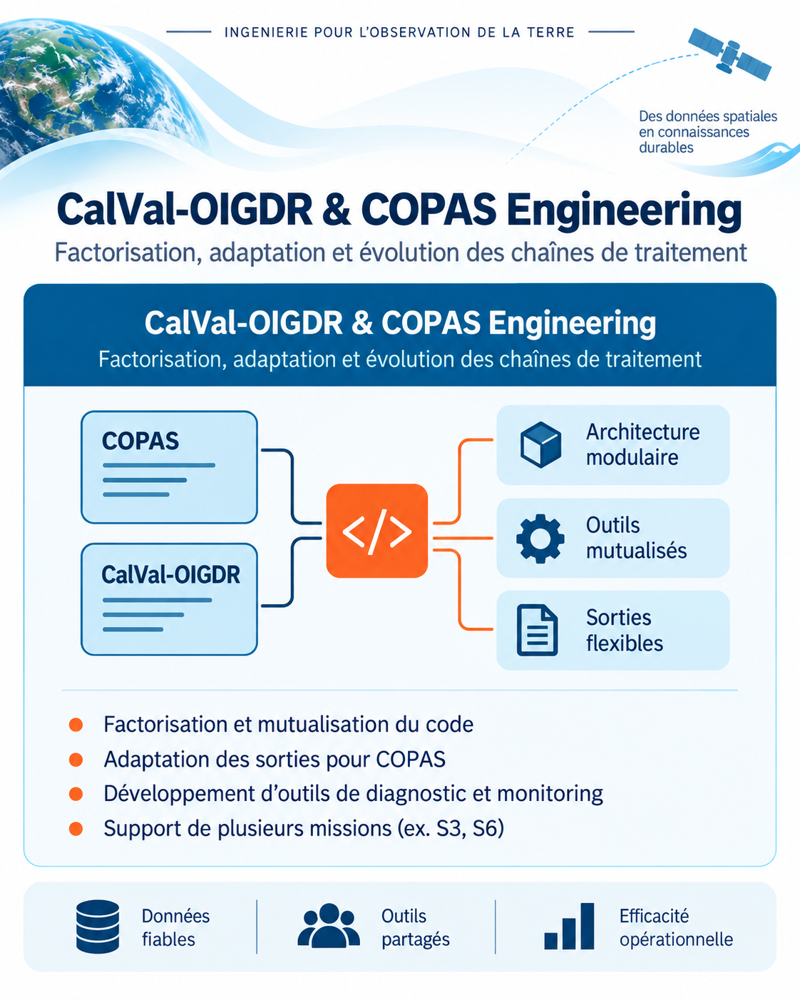

Data Engineering & CalVal Operations
Scientific-software engineering and operational data work covering CalVal-OIGDR / COPAS code factorization, automated archival workflows, and Sentinel-3A / Sentinel-3B processing and data-completeness validation.

In parallel with scientific analysis activities, I work on the software and operational infrastructure required to make satellite-altimetry processing more maintainable, traceable and reliable.
This work is organized around three independent but complementary areas:
software factorization and migration between CalVal-OIGDR and COPAS,
automation of the data-archiving lifecycle, and processing and
completeness monitoring for Sentinel-3A and Sentinel-3B.

CalVal-OIGDR / COPAS factorization and migration
A major part of this work consists in refactoring the Daily Status notification chain used for CalVal-OIGDR reporting. The objective is to separate orchestration, business logic, data access, diagnostics and presentation so that each component can evolve independently.
The reporting architecture was reorganized around dedicated modules for data models, statistical calculations, data-source access and reporting. Additional tools were introduced for pass-level diagnostics and concise console summaries, making it easier to identify threshold exceedances and operational anomalies.
The same factorization also supports the transition toward COPAS. A CSV access layer makes it possible to consume COPAS outputs while preserving the existing reporting logic, and mission-specific behavior can be isolated through dedicated plugins rather than added directly to the generic statistics code.
Main contributions
- Refactoring of the Daily Status workflow into clear software layers.
- Separation of orchestration, calculations, data access and presentation.
- Pass-level diagnostics for identifying out-of-threshold observations.
- Console summaries for faster operational monitoring.
- COPAS-compatible data access and reusable mission-specific plugins.
Automated data archiving
I also worked on an automated archiving chain designed to secure the lifecycle of scientific datasets from local storage to S3 / Scality object storage.
The workflow detects new data incrementally, transfers the relevant files, verifies remote integrity using file size and SHA256 checks, and prepares controlled purge manifests. Local files are removed only after the archived copy has been validated.
The same organization improves traceability and makes the archive easier to maintain and restore, while reducing manual handling of large data volumes.
Workflow
- Detection of new or not-yet-archived datasets.
- Transfer to S3 / Scality storage.
- Integrity verification using metadata and SHA256 checks.
- Manifest generation and validation before deletion.
- Controlled cleanup of validated local copies.
- Traceable logs and restore support.
Sentinel-3A / Sentinel-3B processing and validation
Another workstream focuses on Sentinel-3A and Sentinel-3B altimetry processing, with particular attention to data completeness, missing tracks and configuration consistency.
The processing chains are analyzed cycle by cycle and pass by pass to detect missing or incomplete records. Field availability, especially latitude coverage, is used to identify gaps and compare them with previously known anomalies.
This work also includes configuration updates and harmonization between Sentinel-3A and Sentinel-3B processing chains, together with reprocessing and table updates when missing or inconsistent data are identified.
Main objectives
- Identify missing cycle/pass combinations and incomplete tracks.
- Monitor field completeness across long processing periods.
- Compare detected gaps with existing reference inventories.
- Update and harmonize Sentinel-3A / Sentinel-3B configurations.
- Support reprocessing and table updates when required.
Reliable and maintainable scientific data systems
Although these activities address different parts of the operational chain, they share the same engineering objective: reduce duplicated logic, improve traceability, automate repetitive operations and make scientific data products easier to validate, maintain and reuse.